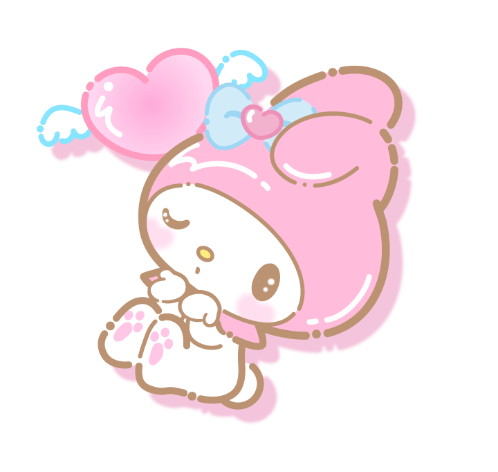

My Melody
My Melody es un personaje producido por la compañía japonesa Sanrio. Es una coneja blanca y siempre usa una capucha roja o rosa.

Historia
My Melody fue lanzada en 1975 y su mercancía salió al mercado al final de ese año. Al principio fue dirigida hacia niñas pequeñas, pero al igual que Hello Kitty su popularidad incrementó entre personas de todas las edades, en especial en Asia.
Al principio fue el personaje de ficción de Caperucita Roja en una versión de la historia con personajes animales. El nombre "My Melody" apareció por primera vez en 1976 y pronto la conexión a Caperucita Roja desapareció prácticamente. Sus amigos animales fueron lanzados a partir de 1976. Su popularidad bajó al final de los 80s, aunque en 1996, por petición de fans se comenzó a sacar al mercado su mercancía de nuevo y sigue teniendo gran popularidad, en especial en Japón.

Descripción física
My Melody es completamente blanca, aunque siempre usa una capucha roja o rosa y un adorno en el lado derecho de su cabeza, el cual suele ser una flor blanca o un moño. Su nariz es amarilla, sus ojos son negros y su oreja izquierda suele estar baja.